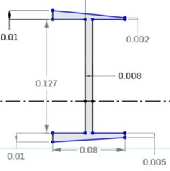
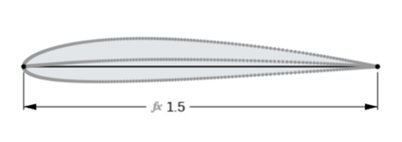
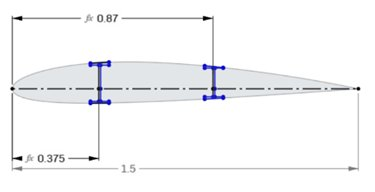
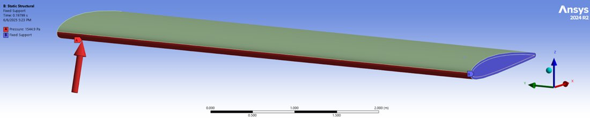
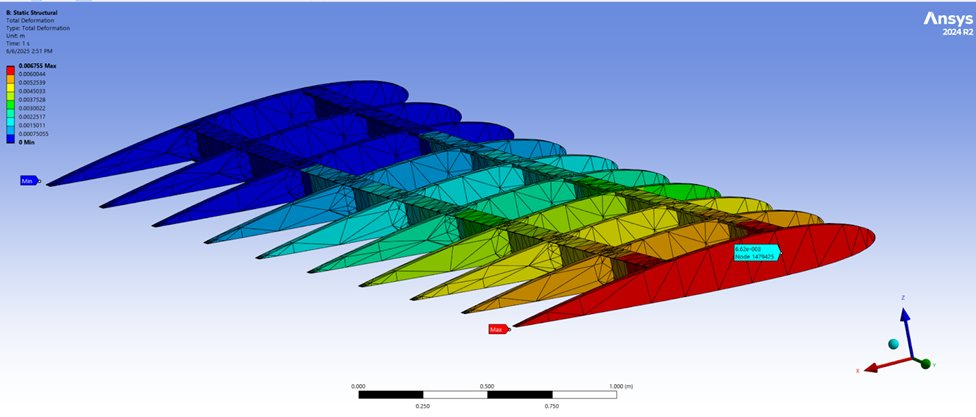
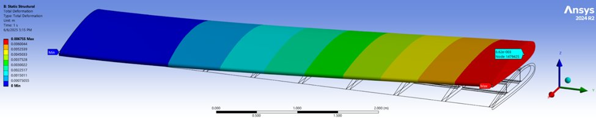
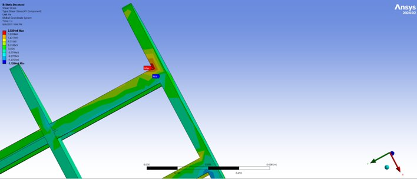

02 — Mechanics of Materials · FEA
Finite element analysis and analytical validation of a Cessna 172 wing under aerodynamic loading — combining ANSYS simulation with Euler-Bernoulli beam theory and the Rayleigh-Ritz method to validate tip deflection and stress results.
Objective
This project analyzed the wing spars of a Cessna 172 to determine whether the rib-and-spar assembly could withstand lift forces during takeoff. The right wing was modeled as two cantilever beams — a main spar at 25% chord and a rear spar at 58% chord — with a fixed support at the root and a distributed pressure load representing aerodynamic lift.
A key requirement from FAA Title 14 CFR Part 23 was a Factor of Safety ≥ 1.5. NASA research set the maximum allowable tip deflection at 567.5 mm (10% of the 5.675 m half-span). Both FEA and two independent analytical methods were used to verify that the design met these targets.
Wing Geometry & Materials
The wing geometry follows the NACA 2412 airfoil profile — 2% max camber at 40% chord, 12% thickness — modeled in OnShape with 10 evenly spaced ribs over the 5.675 m half-span. The main and rear spars are I-beams whose top and bottom flanges conform to the airfoil curvature to maintain proper contact with the skin.
Material selection was guided by FAA AC 20-107B. Carbon Fiber Reinforced Polymer (CFRP) was assigned to ribs and spars for its superior stiffness-to-weight ratio (E = 94.87 GPa, yield strength = 503.4 MPa). The outer skin uses Aluminum 2024-T3 (E = 73.08 GPa) — certifiable and cost-effective. The combined wing weight is 6,730 N across skin, ribs, and spars.



I-beam spar cross section (left) — NACA 2412 airfoil planform (center) — wing top view with spar and rib placement at 25% and 58% chord (right)
Loading & Boundary Conditions
The applied load was derived from FAA safety requirements: total upward lift force of 11,306.92 N (FOS 1.5 × max lift × 0.4 × aircraft weight), distributed uniformly over the wing's lower surface area of 8.828 m² — yielding a pressure of 1,280.8 Pa. The wing root face was fixed as a cantilever boundary condition, representing attachment to the fuselage.

ANSYS setup — fixed support at wing root (cantilever), uniform distributed lift pressure of 1,280.8 Pa on the lower surface
Results
ANSYS maximum tip deflection came to 6.75 mm for the full wing. This aligned closely with both analytical predictions: Euler-Bernoulli and the Principle of Minimum Potential Energy each gave 6.70 mm for the main spar — confirming that the cantilever beam simplification was valid despite ignoring the slanted flanges and rib bonding contributions. Both values are far below the 567.5 mm FAA allowable, leaving a large structural margin.
Maximum shear stress peaked at 2.32 MPa at the spar-rib junction near the root — well within the 193.7 MPa allowable. Maximum normal stress in the main spar was 5.45 MPa, against a 335.6 MPa allowable. The high factor of safety throughout reflects both the inherent stiffness of CFRP and the simplifications in the model, which did not include stringers, ailerons, or tapered geometry.

Total deformation — skin hidden to show internal rib-spar structure. Max deformation: 6.75 mm at tip.

Total deformation — full wing assembly with skin. The smooth gradient from root to tip is consistent with cantilever bending behavior.

Shear stress (XY) — maximum of 2.32 MPa at spar-rib junction near root, well below the 193.7 MPa allowable
Analytical Validation
The main spar was treated as a cantilever beam under uniform distributed load q = (1,280.8 Pa)(0.08 m). Using the I-beam moment of inertia Iz = 1.393 × 10⁻⁵ m⁴ and E = 94.87 GPa, both the Euler-Bernoulli tip deflection formula u(L) = qL⁴/8EI and the PMPE trial function u(x) = ax²(3L−x) produced identical results: 6.70 mm at L = 5.675 m.
The agreement between two independent analytical methods and FEA validates the simulation setup and confirms that the simplifying assumptions — uniform cross-section, straight flanges, no rib interaction — were reasonable for this loading case. The small discrepancy between 6.70 mm and 6.75 mm is attributable to the rib bonding and rear spar contributions captured in the 3D FEA but absent in the 1D beam model.
Reflection
Euler-Bernoulli and Rayleigh-Ritz predicted nearly identical results (6.70 mm) that matched FEA to within 0.7% — confirming that the cantilever beam simplification was valid and that both analytical methods were correctly implemented. Strong analytical-FEA agreement is what gives you confidence to trust the simulation.
The design passed every structural requirement with a very high factor of safety. This is partly a consequence of using CFRP throughout — a material appropriate for high-performance aircraft, not light general aviation. Real Cessna 172 wings use aluminum spars; the very low deflection observed here reflects material overdesign, not optimal engineering.
The simplified model — uniform cross-section, no stringers, ailerons, or tapering — was sufficient for this analysis but would not capture the stress redistribution and dynamic behavior of a real wing under gust loading or control surface actuation. FEA results should always be evaluated in the context of what the model does and does not include.